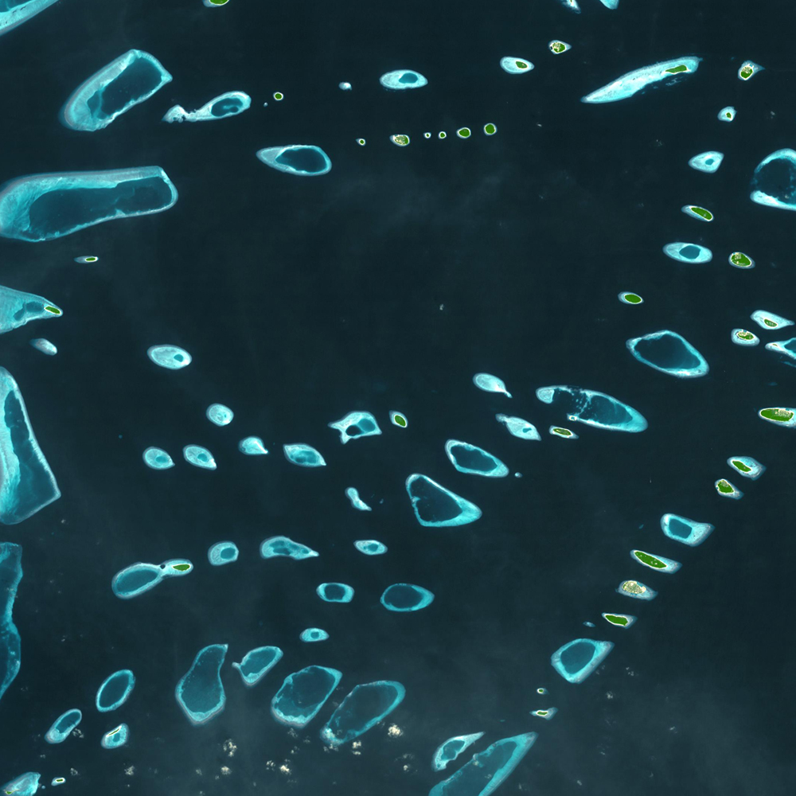

The Maldives, a collection of 1190 islands in the Indian Ocean, is the flattest country on the planet. With 80% of the country less than 1m above sea level, the Maldives are extremely vulnerable to rising sea levels.
Although the Maldives are only responsible for 0.0003% of global emissions, they are already suffering from the servere impact of climate change due to the location and size of the islands. Currently, 90% of the islands
have experienced flooding, 97% have experienced shoreline erosion and 64% have experienced serial erosion.